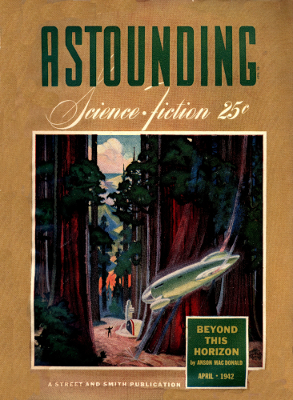
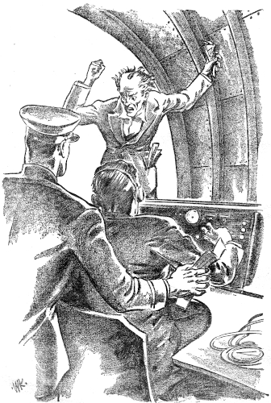
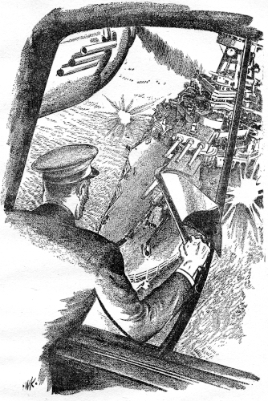

Radio is an absolute necessity in modern
organization—and particularly in modern
naval organization. If you could silence all
radio—silence of that sort would be deadly!
[Transcriber's Note: This etext was produced from
Astounding Science-Fiction April 1942.
Extensive research did not uncover any evidence that
the U.S. copyright on this publication was renewed.]
The hurried rat-a-tat of knuckles hammered on the cabin door. Commander Bob Curtis roused himself from his doze, got up from his chair, stretched himself to his full, lanky height and yawned. That would be Nelson, his navigating officer. Nelson always knocked that way—like a man in an external state of jitters over nothing at all.
Curtis didn't hurry. It pleased him to let Nelson wait. He moved slowly to the door, paused there, and flung a backward glance at the man in the cabin with him—Zukor Androka, the elderly Czech scientist, a guest of the United States navy, here aboard the cruiser Comerford.
The wizened face of the older man was molded in intent lines of concentration, as his bushy gray head bent over his drawing board. Curtis got a glimpse of the design on which he was working, and his lips relaxed in a faint smile.
Androka had arrived on board the Comerford the day before she sailed from Norfolk. With him came a boatload of scientific apparatus and equipment, including a number of things that looked like oxygen tanks, which were now stored in the forward hold. Androka had watched over his treasures with the jealous care of a mother hen, and spent hours daily in the room in the superstructure that had been assigned as his laboratory.
Sometimes, Curtis thought old Androka was a bit wacky—a scientist whose mind had been turned by the horror that had come to his country under the domination of the Nazi gestapo. At other times, the man seemed a genius. Perhaps that was the answer—a mad genius!
Curtis opened the door and looked out. Rain whipped against his face like a stinging wet lash. Overhead, the sky was a storm-racked mass of clouds, broken in one spot by a tiny patch of starlit blue.
His eyes rested inquiringly on the face of the man who stood before him. It was Nelson, his shaggy blond brows drawn scowlingly down over his pale eyes; his thin face a mass of tense lines; his big hands fumbling at the neck of his slicker. Rain was coursing down his white cheeks, streaking them with glistening furrows.
The fellow was a headache to Curtis. He was overfriendly with a black-browed bos'n's mate named Joe Bradford—the worst trouble maker on board. But there was no question of his ability. He was a good navigating officer—dependable, accurate, conscientious. Nevertheless, his taut face, restless, searching eyes, and eternally nervous manner got Curtis' goat.
"Come in, Nelson!" he said.
Nelson shouldered his way inside, and stood there in his dripping oilskins, blinking his eyes against the yellow light.
Curtis closed the door and nodded toward the bent form of Zukor Androka, with a quizzical grin. "Old Czech-and-Double-Czech is working hard on his latest invention to pull Hitler's teeth and re-establish the Czech Republic!"
Nelson had no answering smile, although there had been a great deal of good-natured joking aboard the Comerford ever since the navy department had sent the scientist on board the cruiser to carry on his experiments.
"I'm worried, sir!" Nelson said. "I'm not sure about my dead reckoning. This storm—"
Curtis threw his arm around Nelson's dripping shoulders. "Forget it! Don't let a little error get you down!"
"But this storm, sir!" Nelson avoided Curtis' friendly eyes and slipped out from under his arm. "It's got me worried. Quartering wind of undetermined force, variable and gusty. There's a chop to the sea—as if from unestimated currents among the islets. No chance to check by observation, and now there is a chance—look at me!"
He held out his hands. They were shaking as if he had the chills.
"You say there is a chance?" Curtis asked. "Stars out?"
"As if by providence, sir, there's a clear patch. I'm wondering—" His voice trailed off, but his eyes swung toward the gleaming sextant on the rack.
Commander Curtis shrugged good-naturedly and reached for the instrument. "Not that I've lost confidence in you, Nels, but just because you asked for it!"
Curtis donned his slicker and went outside, sextant in hand. In a few minutes he returned and handed Nelson a sheet of paper with figures underlined heavily.
"Here's what I make it," the commander told his navigating officer. "Bet you're not off appreciably."
Nelson stared at the computations with shaking head. Then he mutely held up his own.
Curtis stared, frowned, grabbed his own sheet again. "Any time I'm that far off old Figure-'em Nelson's estimate, I'm checking back," he declared, frowning at the two papers and hastily rechecking his own figures.
"Call up to the bridge to stop her," he told Nelson. "We can't afford to move in these waters with such a possibility of error!"
Nelson complied, and the throbbing drive of the engines lessened at once. Nelson said: "I've been wondering, sir, if it wouldn't be advisable to try getting a radio cross-bearing. With all these rocks and islets—"
"Radio?" repeated the little Czech, thrusting his face between the other two, in his independent fashion that ignored ship's discipline. "You're using your radio?" He broke into a knowing chuckle, his keen old eyes twinkling behind their thick lenses. "Go ahead and try it. See how much you can get! It will be no more than Hitler can get when Zukor Androka decrees silence over the German airways! Try it! Try it, I say!"
Bob Curtis stared at him, as if questioning his sanity. Then he hastened to the radio room, with Nelson at his heels, and the Czech trotting along behind.
The door burst open as they neared it. A frightened operator came out, still wearing his earphones, and stood staring upward incredulously at the aërial.
"Get us a radio cross-bearing for location at once," Curtis said sharply, for the operator seemed in a daze.
"Bearing, sir?" The man brought his eyes down with difficulty, as if still dissatisfied. "I'm sorry, sir, but the outfit's dead. Went out on me about five minutes ago. I was taking the weather report when the set conked. I was trying to see if something's wrong."
The Czech inventor giggled. Curtis gave him another curious look and thrust himself into the radio room.
"Try again!" he told the operator. "See what you can get!"
The radio man leaped to his seat and tried frantically. Again and again, he sent off a request for a cross-bearing from shore stations that had recently been established to insure safety to naval vessels, but there was no answer on any of the bands—not even the blare of a high-powered commercial program in the higher reach, nor the chatter of ships or amateurs on the shorter.
"Dead!" Androka muttered, with a bitter laugh. "Yet not dead, gentlemen! The set is uninjured. The waves are what have been upset. I have shattered them around your ship, just as I can eventually shatter them all over Central Europe! For the next two hours, no radio messages can enter or leave my zone of radio silence—of refracted radio waves, set up by my little station on one of the neighboring islets!"
There was a long pause, while commander and navigator stared at him. Curtis was the first to speak.
"Your secrecy might well cost the United States navy one of its best light cruisers—and us our lives!" he said angrily. "We need that check by radio at once! If you're not talking nonsense, call off your dogs till we learn just where we are!"
Androka held out his palms helplessly. "I can do nothing. I have given orders to my assistant that he must keep two hours of radio silence! I can get no message to him, for our radio is dead!"
As if to mock him, the ship's radio began to answer:
"Station 297 calling U. S. Cruiser Comerford. Station 297 calling U. S. Cruiser Comerford—"
"U. S. Cruiser Comerford calling Station 297!" the operator intoned, winking at the two officers over Androka's discomfiture, and asked for the bearings.
The answer came back: "Bearings north east by a quarter east, U. S. Cruiser Comerford!"
Curtis sighed with relief. He saw that Nelson was staring fiercely at the radio operator, as the man went on calling: "U. S. Cruiser Comerford calling Station 364. U. S. Cruiser Comerford calling Station 364—"
Then the instrument rasped again: "Station 364 calling U. S. Cruiser Comerford. Bearings north west by three west. Bearings north west by three west, U. S. Cruiser Comerford from Cay 364."
Commander and navigator had both scribbled verifications of the numbers. Ignoring the gibbering Androka, who was wailing his disappointment that messages had penetrated his veil of silence, they raced for the chart room.

Quickly the parallels stepped off the bearing from the designated points. Light intersecting lines proclaimed a check on their position.
Curtis frowned and shook his head. Slowly he forced a reluctant grin as he stuck out his hand.
"Shake, Nels," he said. "It's my turn to eat crow. You and the radio must be right. Continue as you were!"
"I'm relieved, sir, just the same," Nelson admitted, "to have the radio bearings. We'd have piled up sure if you'd been right."
They went on through the night. The starlit gap in the clouds had closed. The sky was again a blanket of darkness pouring sheets of rain at them.
Nelson went back to the bridge, and Androka returned to the commander's cabin. Curtis lingered in the wireless room with the radio operator.
"It's a funny thing," the latter said, still dialing and grousing, "how I got that cross-bearing through and can't get another squeak out of her. I'm wondering if that old goat really has done something to the ether. The set seems O. K."
He lingered over the apparatus, checking and rechecking. Tubes lighted; wires were alive to the touch and set him to shaking his head at the tingle they sent through his inquiring fingers.
Curtis left him at it, and went to rejoin Androka in the cabin. He found the little inventor pacing up and down, shaking his fists in the air; pausing every now and then to run his bony fingers through his tangled mop of gray hair, or to claw nervously at his beard.
"You have seen a miracle, commander!" he shouted at Curtis. "My miracle! My invention has shattered the ether waves hereabouts hopelessly."
"Seems to me," Curtis said dryly, "this invention can harm your friends as much as your enemies."
The scientist drew himself up to his full height—which was only a little over five feet. His voice grew shrill. "Wait! Just wait! There are other inventions to supplement this one. Put them together, and they will defeat the Nazi hordes which have ravaged my country!"
Curtis was a little shocked by the hatred that gleamed in Androka's eyes, under their bushy brows. There was something of the wild animal in the man's expression, as his lips drew back from his yellowed teeth.
"Those tanks you have below," Curtis said, "have they some connection with this radio silence?"
A far-away look came into Androka's eyes. He did not seem to hear the question. He lowered his voice: "My daughter is still in Prague. So are my sister and her husband, and their two daughters. If the gestapo knew what I am doing, all of them would be better dead. You understand—better dead?"
Curtis said: "I understand."
"And if the Nazi agents in America knew of the islet from which my zone of silence is projected—" Androka paused, his head tilted to one side, as if he were listening to something—
On deck, there was shouting and commotion. Curtis rushed out, pulling on his slicker as he went. The shout from the watch forward had been picked up, and was being relayed all over the ship. The words struck on Curtis' ears with a note of impending tragedy.
"Breakers ahead!"
He was beside Navigating Officer Nelson on the bridge, and saw the helmsman climbing the rapidly spinning wheel like a monkey as he put it hard aport.
Then the ship struck. Everything movable shot ahead until it brought up at the end of a swing or smacked against something solid.
Curtis felt Nelson's hand grip his shoulder, as he put his lips close to his ear and shouted: "You must have been right, sir, and the radio bearings and my reckoning wrong. We've hit that reef a terrific smack. I'm afraid we're gored!"
"Get out the collision mat!" Curtis ordered. "We ought to be able to keep her up!"
And then he became aware of a deadly stillness. A vast wall of silence enveloped the entire cruiser. Looking over the side, he could no longer see the waves that a few minutes before had beaten savagely against the ship.
The Comerford was shrouded in a huge pall of yellowish-gray mist, and more of it was coming up from below—from ventilators and hatchways and skylights—as if the whole ship were flooded with some evil vapor.
Somehow, Curtis' mind flashed to the stories he'd heard of the forts of the Maginot Line, and of other forts in Holland and Belgium that had fallen before the early Nazi blitzkrieg, when their defenders found themselves struck numb and helpless by a gas that had been flooded into the inner compartments of their strongholds.
There were those who said it was the work of sappers who had tunneled under the foundations, while others laid the induction of the gas to Fifth Column traitors. There were a hundred more or less plausible explanations—
The vapor clouds that enveloped the Comerford were becoming thicker. All about the deck lay the forms of unconscious seamen, suddenly stricken helpless. And then Curtis saw other forms flitting about the deck—forms that looked like creatures from another world, but he recognized them for what they were—men wearing gas masks.
Nelson was nowhere in sight. The steersman lay in a limp heap beside the swinging wheel. Then a gas-masked figure appeared through the shroud of mist and steadied it, so that the cruiser would not be completely at the mercy of the wind and the waves.
Curtis heard the anchor let down, as if by invisible hands, the chain screaming and flailing its clanking way through the hawse hole. Then he was completely walled in by the yellowish-gray mist. He felt his senses swimming.
Voices droned all around him in mumbling confusion—guttural voices that ebbed and flowed in a tide of excited talk. He caught a word of English now and then, mixed in with a flood of Teuton phonetics.
Two words, in particular, registered clearly on his mind. One was "Carethusia"; the other was "convoy." But gradually his eardrums began to throb, as if someone were pounding on them from the inside. He couldn't get his breath; a cloud seemed to be mounting within him until it swept over his brain—
He felt something strike the side of his head, and realized that he had fallen in a heap on the bridge. And after that, he wasn't conscious of anything—
The rain had abated to a foggy drizzle. The wash of the surf swung the Comerford in a lazy, rolling motion, as she lay with her bow nosing into the sandbar at the entrance of the inlet.
From her bridge, Navigating Officer Nelson watched the gas-masked figures moving about the decks, descending companionways—like goblins from an ancient fairy tale or a modern horror story. Nelson looked like a goblin himself, with his face covered by a respirator. At his side, stood his fellow conspirator Bos'n's Mate Joe Bradford, also wearing a gas mask.
Nelson spoke in a low tone, his lips close to Bradford's ear. "It worked, Joe!"
"Yeah!" Bradford agreed. "It worked—fine!"
The limp bodies of the Comerford's crew were being carried to the lowered accommodation ladder and transferred into waiting lifeboats.
Nelson swore under his breath. "Reckon it'll take a couple of hours before the ship's rid of that damn gas!"
Bradford shook his head in disagreement. "The old geezer claims he's got a neutralizing chemical in one of them tanks of his that'll clear everything up inside half an hour."
"I'd rather get along without Androka, if we could!" Nelson muttered. "He's nothing but a crackpot!"
"It was a crackpot who invented the gas we used to break up the Maginot Line," Bradford reminded him. "It saved a lot of lives for the Fuehrer—lives that'd have been lost if the forts had to be taken by our storm troopers!"
Nelson grunted and turned away. A short, thick-set figure in the uniform of a German naval commander had ascended the accommodation ladder and was mounting to the bridge. He, too, was equipped with a respirator.
He came up to Nelson, saluted, and held out his hand, introducing himself as Herr Kommander Brandt. He began to speak in German, but Nelson stopped him.
"I don't speak any German," he explained. "I was born and educated in the United States—of German parents, who had been ruined in the First World War. My mother committed suicide when she learned that we were penniless. My father—" He paused and cleared his throat.
"Ja! Your father?" the German officer prompted, dropping into accented English. "Your father?"
"My father dedicated me to a career of revenge—to wipe out his wrongs," Nelson continued. "If America hadn't gone into the First World War, he wouldn't have lost his business; my mother would still be living. When he joined the Nazi party, the way became clear to use me—to educate me in a military prep school, then send me to Annapolis, for a career in the United States navy—and no one suspected me. No one—"
"Sometimes," Bradford put in, "I think Curtis suspected you."
"Maybe Curtis'll find out his suspicions were justified," Nelson said bitterly. "But it won't do Curtis any good—a commander who's lost his ship." He turned to Brandt. "You have plenty of men to work the Comerford?"
Brandt nodded his square head. "We have a full crew—two hundred men—officers, seamen, mechanics, radio men, technical experts, all German naval reservists living in the United States, who've been sent here secretly, a few at a time, during the past six weeks!"
The three—Brandt, Nelson and Bradford—stood on the bridge and talked, while the efficient stretcher-bearers worked industriously to remove the limp bodies of the Comerford's unconscious crew and row them ashore.
And when that task was completed, lifeboats began to come alongside with strange-looking radio equipment, and more gas tanks like those Androka had brought aboard the Comerford with him, and dynamos and batteries that looked like something out of a scientific nightmare.
And bustling all over the place, barking excited commands in German, pushing and pulling and pointing to emphasize his directions, was the strange figure of Professor Zukor Androka!
"The professor's in his glory!" Nelson remarked to Kommander Brandt.
"Funny thing about him," Bradford put in, "is that his inventions work. That zone of silence cut us off completely."
Kommander Brandt nodded. "Goodt! But you got your message giving your bearings—the wrong ones?"
"Yes," Nelson said. "That came through all right. And won't Curtis have a time explaining it!"
"Hereafter," Brandt said solemnly, "the zone of silence vill be projected from the Comerford; and ve have another invention of Androka's vich vill be even more useful vhen ve come to cut the Carethusia out of her convoy."
"The Carethusia?" Nelson asked, in a puzzled tone.
Brandt said: "She's a freighter in a convoy out of St. Johns—twelve thousand tons. The orders are to take her; not sink her."
"What's the idea?"
"Her cargo," Brandt explained. "It iss more precious than rubies. It includes a large shipment of boarts."
"Boarts?" Nelson repeated. "What are they?"
"Boarts," Brandt told him, "are industrial diamonds—black, imperfectly crystallized stones, but far more valuable to us than flawless diamonds from Tiffany's on Fift' Avenue. They are needed for making machine tools. They come from northern Brazil—and our supply is low."
"I should think we could get a shipment of these boarts direct from Brazil—through the blockade," Nelson said, "without taking the risk of capturing a United States navy cruiser."
"There are other things Germany needs desperately on board the Carethusia," Brandt explained. "Vanadium and nickel and hundreds of barrels of lard oil for machine-tool lubrication. Our agents have been watching the convoys closely for weeks for just such a cargo as the Carethusia is taking over."
"Can we trust Androka?" Nelson asked, with a sudden note of suspicion in his voice.
"Yes," Brandt assured him. "Of all men—we can trust Androka!"
"But he's a Czech," Nelson argued.
"The gestapo takes care of Czechs and Poles and Frenchmen and other foreigners whom it chooses as its agents," Brandt pointed out. "Androka has a daughter and other relations in Prague. He knows that if anything misfires, if there is the slightest suspicion of treachery on his part, his daughter and the others will suffer. Androka's loyalty is assured!"
Nelson turned to watch the forward fighting top of the Comerford. The masked German seamen were installing some sort of apparatus up there—a strange-looking object that looked something like an old-fashioned trench mortar, and which connected with cables to the room that served as Androka's laboratory and workshop.
Another crew was installing radio apparatus in the mizzentop turret.
Descending a companionway to see what was going on below, Nelson found that portholes were being opened, and men were spraying chemical around to rid the below-decks atmosphere of the lethal gas that had overcome the Comerford's American crew.
Returning to the bridge, he found that the tide in the inlet had risen considerably, and that the cruiser was riding more easily at her anchor.
Then, at Brandt's orders, the anchor was hauled in, and lifeboats and a motor launch were used as tugs to work the vessel entirely free of the sand bar. This was accomplished without difficulty.
Brandt came over to where Nelson was standing on the bridge and held out his hand.
"Congratulations, Herr Kommander Nelson!" he said. "Ve have stolen one of the United States navy's newest and fastest cruisers!" He made a gesture as if raising a beer stein to drink a toast. "Prosit!" he added.
"Prosit!" Nelson repeated, and the two grinned at each other.
Stars were twinkling in a patch of black-blue sky, and broken mountains of gray cloud were skudding before the east wind. Commander Bob Curtis found himself lying in wet sand, on a beach, somewhere, with the rain—now a light, driving mist—beating on his face. He was chilled; his limbs were stiff and numb. His nose and throat felt parched inside, as if a wave of searing heat had scorched them.
According to his last calculations, the Comerford had been cruising off the Maine coast. This probably was one of the islets of that region, or it might be the mainland.
It was hard work getting to his feet, and when he did manage to stand, he could only plant his heels in the sand and sway to and fro for fully a minute, like a child learning to walk.
All around him in the nearly total darkness, he could make out the dim forms of men sprawled on the beach; and of other men moving about, exploring. He heard the murmur of voices and saw the glow of lighted cigarettes.
A man with a flashlight was approaching him. Its white glare shone for a moment in Curtis' face, and the familiar voice of Ensign Jack Dillon spoke: "Commander Curtis! Are you O. K., sir?"
"I think so!" Curtis' heart warmed at the eager expression in Dillon's face; at the heartfelt concern in his friendly brown eyes. The young ensign was red-headed, impetuous, thoroughly genuine in his emotions. "How about yourself, Jack?" Curtis added.
"A bit of a headache from the gas, but that's all. Any orders, sir?"
Curtis thought for a moment. "Muster the crew, as best you can. We'll try to make a roll call. Is there any sign of the ship?"
There was a solemn note in Dillon's voice. "No, sir. She's been worked off the sandbar and put to sea!"
The words struck Curtis with the numbing shock of a blow on some nerve center. For the first time, he realized fully the tragedy that had swept down on him. He had lost his ship—one of the United States navy's fastest and newest small light cruisers—under circumstances which smelled strongly of treachery and sabotage.
As he thought back, he realized that he might have prevented the loss, if he had been more alert, more suspicious. For it was clear to him now that the Comerford had been deliberately steered to this place; that the men who had seized her had been waiting here for that very purpose.
The pieces of the picture fitted together like a jigsaw puzzle—Androka's zone of silence; the bearings given by radio; Navigating Officer Nelson's queer conduct. They were all part of a carefully laid plan!
All the suspicious circumstances surrounding Nelson came flooding into Curtis' mind. He had never liked the man; never trusted him. Nelson always acted as if he had some secret, something to hide.
Curtis recalled that Nelson and Androka had long conversations together—conversations which they would end abruptly when anyone else came within earshot. And Nelson had always been chummy with the worst trouble maker in the crew—Bos'n's Mate Bradford.
Curtis went around, finding the officers, issuing orders. There were still some unconscious men to be revived. In a sheltered cove among the rocks, an exploring group had found enough dry driftwood to make a fire—
In another hour, the skies had cleared, and white moonlight flooded the scene with a ghostly radiance. The men of the Comerford had all regained consciousness and were drying out in front of the big driftwood bonfires in the cove.
Curtis ordered a beacon kept burning on a high promontory. Then he got the men lined up, according to their respective classifications, for a check-up on the missing.
When this was completed, it was found that the Comerford's entire complement of two hundred and twenty men were present—except Navigating Officer Nelson, and Bos'n's Mate Bradford! And Zukor Androka was also missing!
With the coming of dawn, a little exploration revealed that the Comerford's crew was marooned on an islet, about a square mile in area; that they had been put ashore without food or extra clothing or equipment of any kind, and that no boats had been left for them.
One searching party reported finding the remains of what had been a radio station on a high promontory on the north shore of the islet. Another had found the remains of tents and log cabins, recently demolished, in a small, timbered hollow—a well-hidden spot invisible from the air, unless one were flying very low; a place where two hundred or more men could have camped.
There was a good water supply—a small creek fed by springs—but nothing in the way of food. Evidently food was a precious commodity which the recent inhabitants of the islet couldn't afford to leave behind.
Curtis was studying the wreckage of the wireless station, wondering if this might have been the source of Androka's zone of silence, when Ensign Jack Dillon came up to him.
"There's a coast-guard cutter heading for the island, sir," he announced.
From the coast-guard station on Hawk Island, a fast navy plane whipped Commander Bob Curtis to the naval base at Portsmouth, New Hampshire. But he was received there with suspicious glances. Even some of his old buddies from way back did no more than give him a limp handshake and a faint "Good luck, Bob!" when they heard of his misadventure.
Within two hours of his arrival, he was facing a court of inquiry, presided over by Rear Admiral Henderson—a sarcastic, leathery-faced seadog, who had fought as an ensign under Schley at Santiago in '98, and had since seen service on the North Sea patrol in the First World War. Even to his best friends, he was known as "Old Curmudgeon."
Curtis fidgeted uncomfortably under his questions. They were so hostile in tone, phrased in such a way as to imply guilt on his part, that Curtis could not help feeling that he was making a bad impression.
"Will you kindly repeat that statement in a clear voice, so that everyone can hear you, commander?" the rear admiral demanded, with a stinging sharpness in his tone.
Curtis cleared his throat and repeated his former explanation: "The radio bearings from the two shore stations checked exactly with the dead reckoning of my navigating officer, refuting my astronomical observation. Naturally, I conceded that I must be wrong, although I could not understand how I made such a mistake."
The voice of Old Curmudgeon became suave and silky—the kind of voice he used when he wished to be nasty. "Commander, did you hear the radioed replies from the island stations in answer to your operator's inquiries?"
Curtis squared his shoulders and faced his questioner boldly. "I did, sir. The radio man on duty reported that he was unable to get anything from the set; claimed it was dead. I insisted that he try, although Androka claimed he had instituted a period of radio silence by some device operating on a neighboring island. He was intensely disappointed when both stations answered clearly and distinctly, giving us bearings that checked with Lieutenant Commander Nelson's dead reckoning."
The rear admiral sneered. "A very pretty story, commander—but all a fabrication!"
Curtis stiffened. His eyes blazed anger for a full minute, out of a face already drawn and white.
"I shall now proceed to prove my accusations," Old Curmudgeon continued. "Bring in those operators!"
There was a commotion at the door, and two radio men came in, saluting smartly. Curtis wondered what was coming.
Old Curmudgeon smiled at them. "You are the radio operators on island stations 297 and 364?"
"Yes, sir."
"And you were both on duty during the mysterious two hours of silence on the night of July 7th?"
"Yes, sir!"
"Did you at any time during the two hours leave your posts?"
"No, sir!"
"Did you, during those two hours, receive any call whatsoever or give out bearings to any ship, particularly the U. S. Cruiser Comerford?"
"No, sir!"
"You are positive about that?"
"Yes, sir!"
"Gentlemen," the rear admiral said triumphantly, turning to the board of inquiry, "I submit to you that this evidence proves that Commander Curtis has told an untruth. I recommend that he be court-martialed on charges of gross negligence in the loss of government property intrusted to his care and of misrepresenting facts regarding the circumstances of loss!"
During the awed silence that followed, Curtis felt his world whirling to pieces.
The rear admiral's voice went on in its most rasping tone: "I recommend further, gentlemen, that Commander Curtis be relieved from active duty, placed on parole, and confined to this station on his own recognizance until the disappearance of the Comerford can be thoroughly investigated."
The members of the inquiry board conferred and voted. There was no dissenting voice from the opinion expressed by Old Curmudgeon.
Angry, ashamed, dazed, Curtis stood to hear the verdict announced. "Gentlemen," he managed to say, his tongue almost choking him, "my only hope is for speedy recovery of the ship!"
Later, in the room assigned to him in the naval barracks, Curtis listened for almost an hour to his short-wave radio set; but it told him nothing of the Comerford—and that was all he cared about.
He shut it off and reached for the telephone. A new idea had come into his mind—something he had vaguely remembered from the night before, the two words overheard as he lay half conscious on the Comerford's bridge—"Carethusia"—"convoy."
"Is there an officer of the British naval intelligence in town?" he asked the operator.
"Yes, sir. Captain Rathbun. Shall I get him for you?"
"Please!"
Fifteen minutes later, Curtis was in the small office where the British naval man made his headquarters, on the main street of the town.
Rathbun listened with close attention to Curtis' story, throwing in a question now and then.
"Yes," he said, "there is a ship called the Carethusia carrying supplies to Britain. But it'd take a little time to locate her. I'd have to wire Halifax!"
He sent off a code telegram and waited. An hour elapsed—two hours—then came the reply. Rathbun decoded it and read it to Curtis.
"Carethusia, carrying valuable cargo to Britain, left St. Johns, Newfoundland, in convoy midnight Friday. American destroyers will join, according to instructions."
"That," Curtis said, "solves part of my problem. The Comerford's after the Carethusia. There must be something of particular value aboard that the Comerford wants!"
"Yes," Captain Rathbun agreed. "There must be!"
Curtis stood up. "Thank you, captain! You've helped me a lot! You've shown me where to look for the Comerford!"
Captain Rathbun shook hands with him. "Right-o! Come and see me again, if there's anything else I can do!"
"Do you suppose you could wire the Carethusia and warn her—or warn the commander of the convoy?"
"That would have to be done from Halifax, or St. Johns," Rathbun said. "I'll ask them."
"And will you let me know what happens?" Curtis asked.
"Gladly," said the Britisher.
Outside, Curtis walked at a breathless pace, almost knocking over a couple of pedestrians and innocent bystanders in his haste. Reaching the naval administration building, he ran up the stairs two at a time to the top floor and barged unannounced into the office of Rear Admiral Henderson.
Old Curmudgeon looked up from his desk with a sour grin on his leathery face. "What d'you mean, Curtis—" he began.
But Bob Curtis ignored his indignation, let the door swing to behind him, and sat down in the vacant chair beside the desk.
"This is no time to stand on ceremony, sir!" he stated firmly. "I've come to give information as to where the Comerford is most likely to be found!"
A sneer twisted Old Curmudgeon's hard features, and anger blazed coldly in his blue eyes. "You wish to make a clean breast of the whole thing, Curtis?"
"I've been proved guilty of nothing," Curtis reminded him. "I have nothing to confess. If you don't want to listen to me—"
Old Curmudgeon's eyes softened. The lines of his face relaxed. "I'm listening."
Curtis quickly told him of the words he'd overheard as he lay half conscious on the bridge of the Comerford, and of how they dovetailed with the information obtained from the British Intelligence Service.
Henderson seemed impressed. There was a more respectful note in his gruff voice. He picked up his telephone and started to dial.
"Remember, Curtis, I'm doing this at your insistence!"
Crisply, concisely, he gave his message, then got up from his desk and went to the window. His eyes turned toward the basin, where the big navy patrol bombers lay at their floats. His head cocked, as if listening for the roar of their motors.
Curtis moved toward him. His eyes lighted with hope as he heard the man-made thunder, saw the big birds taxi out, pick up speed, go soaring into the air, after kicking their spiteful way off the tops of a few waves.
"They'll have our answer," Henderson said, "within a few hours. I'll let you know what happens!"
Curtis took the words as meaning that he was dismissed. He thanked Old Curmudgeon and started back for his quarters.
There, he crouched over the short-wave radio set and waited and listened. The air was alive with calls and messages. From time to time, he caught the reports from the three navy planes that were winging steadily on their flight after the Comerford.
Then, just after midnight, the reassuring words of the operator on one of the bombers were cut off short.
"They've struck the zone of silence," Curtis whispered. "The Comerford must have spread it, so that it encircles the entire convoy. Those bombers'll shove in, see what's happening and come back out of the zone to report, even if their radios are silenced. Nelson never figured on that!"
His telephone shrilled. It was Captain Rathbun, of the British Intelligence. His words confirmed Curtis' suspicions.
"I've just had word from Halifax. They arranged to contact the Carethusia's convoy by wireless every night at eleven-thirty, but tonight, they got no answer. The convoy must be caught in the zone of silence."
Curtis couldn't keep the note of triumph out of his voice. "Then all we've got to do is locate the convoy—and we've got the Comerford!"
"Cheerio!" said Rathbun's voice, and he hung up.
Curtis relaxed in his chair beside the short-wave set. Dawn came and found him still alert, listening, wakeful. He had breakfast sent up, but touched nothing except the pot of black coffee.
Several times, he computed the probable flying time of the three planes, and the distance the slow-moving convoy could have covered since sailing at midnight on the previous Friday. Then he tried to find the position of the convoy on the map.
Again the phone rang. A strange voice spoke over the wire. "This is Rear Admiral Henderson's office. He'd like you to come over at once."
"I'll be there!" Curtis said.
He found Old Curmudgeon pacing nervously up and down, chewing savagely on a half-smoked cigar which smelled vilely. From the expression on the old seadog's face, he knew there was bad news.
"I've just had a message from the Lexington," Henderson said. "She's found the bombers!"
"Found them?" Curtis was puzzled.
The rear admiral's face was gloomy. "They were floating—in a sinking condition. The crews of all three were dazed. None of them could understand what had happened, but they all told the same story!"
"And what was it?" Curtis asked, as Old Curmudgeon paused.
The older man slumped into his chair, his shoulders sagging wearily. "They were circling about the Comerford, ready to close in, when a sudden blinding flash, which seemed to come from the foremast turret, killed both radio and motor."

"That must have been the new invention Androka was working on!" Curtis exclaimed. "Have you heard how badly the equipment was damaged?"
"Yes," Old Curmudgeon answered. "It was burned out by a terrific heat that melted copper wires, cracked the porcelain on plugs, and fused them into their sockets. Batteries, magnetos, tubes—everything was destroyed!"
Curtis leaned forward and gazed earnestly into the rear admiral's tired face. "Sir, you have received proof that something unusual has taken place aboard the Comerford; that she is in the hands of enemies. Do you believe now that I have told the truth?"
Old Curmudgeon's eyes held a kinder expression than Curtis had ever seen in them before. "Yes; I believe you!"
"Thank you, sir!" Bob Curtis said, deeply moved. "I don't blame you," he added. "The story I told was unbelievable! But I think I know a way to catch up with the Comerford—recapture her without destroying her!"
"Tell me your plan!" Henderson said quietly, and he leaned back in his chair to listen.
Curtis spoke to him earnestly for some time. When he had finished, Old Curmudgeon raised his telephone and began dialing and giving orders.
Then he stood up and held out his hand. "Good luck, commander! Your plane'll be ready in half an hour!"
Commander Bob Curtis was in the co-pilot's seat, as the big PBY flying boat, one of the navy's latest-type patrol bombers, spanked out into the choppy water, lifted, went roaring off. The miles slipped away astern under the pull of its mighty propellers as they raced on their journey.
Every once in a while, Curtis turned his eyes away from the restless gray Atlantic to glance toward the cabin, where the navigator and wireless operator sat at his little table. There was, he knew, a machine gunner at his post in the tail of the plane, and a bombardier lying flat in the nose of the fuselage.
At short intervals, Curtis got the relayed radio reports, through his headphones, from the Lexington. The seaplane's wireless was keeping in constant touch with the big aircraft carrier, which evidently was still outside the limits of Zukor Androka's zone of silence.
The Lexington held the key to Curtis' secret plan. This flight was the first leg of his journey to recapture the Comerford.
At the controls, the pilot, Lieutenant Delton, sat relaxed, smiling confidently, a cigarette in the corner of his mouth. He offered one to Curtis, who took it with a nod of thanks, lighted it and inhaled deeply. It tasted good, eased the strain on his nerves.
The voice of the navigator came through his phones. "Lexington hasn't answered for the past half hour. I've been calling her every five minutes!"
Curtis' heart leaped at the news. The Lexington had come into the silence area!
That might mean the Comerford was close at hand; or it might be five hundred miles away. For that, Curtis figured, was the maximum radius over which Androka's zone could extend its influence. And the device for killing all electrical apparatus with a ray would necessarily operate at a much shorter distance—unless Androka's invention bordered on the miraculous.
The Lexington hove in sight. Curtis thrilled at the sight of her top deck, with its rows upon rows of planes, their propellers agleam in the sunlight that had recently broken through the Atlantic fog.
For a moment, his lips tightened as he thought of the destruction which Androka's deadly ray could wreak on this splendid array of aircraft, and the resolution in him gained renewed confidence, as his eyes swept the Lexington's powerful hull.
He was aware that the pilot had shut off the motor and was gliding in a circular descent that would bring the heavy navy bomber taxiing to a stop alongside the aircraft carrier. The man out front in the bomber's pit had diffused his bombs and left his post in the nose of the fuselage, and the machine-gunner aft had come out of his nest—both glad of the opportunity to change their cramped quarters for a spell.
The Lexington lowered a boat and took Curtis on board. A few minutes later, he was explaining his theory to the Lexington's commander, with the aid of a map of the Atlantic in the chart room.
"The way I figure it, sir," he stated, "is that the Comerford has been detailed to cut the Carethusia out of her convoy and take her to some French port—probably Bordeaux, where she will be less likely to prove a target for R. A. F. bombers."
The Lexington's commander nodded. "I think I follow you. The Carethusia's cargo must be something of immense value to the Nazi war machine."
"There's no doubt that it is, sir," Curtis said, "or they wouldn't take so much trouble to capture it. And there'd be no point in separating the Carethusia from her convoy before they're fairly close to the French port which they intend to make."
"Where do you place the convoy at present?" the other man asked.
Curtis put his finger on a spot on the map, in about mid-Atlantic, along one of the more northerly sea lanes. "I've checked with the British Naval Intelligence. The convoy makes the voyage in sixteen days, under normal conditions. Its speed is that of the slowest boat. It left at midnight last Friday, and this is Friday again."
"And the Comerford?"
"The Comerford," Curtis said, "is undoubtedly with the convoy, making the British believe that she is one of the American war vessels which usually pick up these convoys at a designated point on the way across."
The Lexington's commander frowned; his face wore a puzzled expression. "But suppose the British escort ships discover the deception?"
"If it came to a showdown," Curtis argued, "the Comerford, equipped with Androka's inventions, is more than a match for any or all of the British war vessels with the convoy. You know they're using mostly light corvettes and over-age destroyers these days."
"I guess you're right," the other agreed. "I haven't forgotten the mess the Comerford made of those three bombers we picked up."
"How long," Curtis asked, "would it take the Lexington to get within striking distance of the convoy—say between fifty and a hundred miles?"
"We could make it shortly after nightfall tomorrow," the other decided, after a bit of figuring.
"And that special plane you've reserved for me will be ready then?" Curtis said.
"It's ready now, if you want it," the commander of the Lexington told him.
The convoy was wallowing its way through the darkness, across the dreary wastes of the Atlantic, following a far-northern sea lane that would be most likely to offer safety from attack by enemy raiders and U-boats.
The Comerford had joined the convoy shortly after it had passed the shores of Iceland, reporting that she had been sent to strengthen it against possible attack by a powerful German sea raider that was reported to be at large in the north Atlantic.
The story was accepted by the commander of the convoy squadron.
In the center of the convoy, the ten ships containing the most valuable cargoes were ranged in parallel lines. They were ringed around by a cordon of converted merchant vessels, armed cargo ships and destroyers, in addition to the U. S. Cruiser Comerford, and the aforementioned British cruiser of First World War vintage.
On the bridge of the Comerford, Navigating Officer Nelson, ex-U. S. N., stood watching the other vessels as they plowed their way through the heavy seas.
All were running without lights, but the phosphorescent wash of the water against their bows and the dark bulk of their hulls revealed their positions.
Nelson's chief attention was focused on the central group of ships—especially on the Carethusia. Another day, perhaps, and it would be time to make his bid to cut the Carethusia out of the convoy and head her for the French port designated in the secret orders which Herr Kommander Brandt had brought on board with him.
Here was Herr Kommander Brandt now, climbing the ladder to the bridge on his stumpy legs. He came up to Nelson, puffing obesely.
"Ach! I vish dis woyage was ofer!" Brandt grunted.
"I hope you mean successfully over," Nelson said.
"Dot old Czech!" Brandt grumbled. "He iss driving me crazy with his fool inventions!"
"Czech and double Czech!" Nelson kidded him. "But his inventions do all he claims for them; and that's saying a lot!"
"Ja!" Brandt agreed. "Dot's so. But—"
He broke off with a guttural oath in German, as a low droning overhead came to his ears. Nelson heard it, too, and raised his night glasses to sweep the sky for the source of the sound.
Suddenly he clutched Brandt by the arm and handed the glasses to him. "There! Look!"
Brandt took the binoculars and focused them to suit his own vision.
"It is some sort of airplane," he said a few minutes later, returning the glasses to Nelson. "A queer-looking one. I can't quite make it out!"
Nelson took the glasses and refocused them. There was something queer about the gliding motion of the aircraft, and then as it came closer, he could make out that it had a second propeller overhead.
"It's a helicopter!" he exclaimed softly. "But it hardly makes any sound at all—a noiseless helicopter. I bet it's Diesel-engined!"
"Ja?" There was surprise in Herr Kommander Brandt's tone.
"And I'll bet," Nelson went on, his eyes suddenly flashing and his voice quivering with excitement, "that Curtis has sent it after us. He always advocated the freer use of helicopters, especially the Diesel-engined type. It wouldn't surprise me if he's in it!"
"Ve can blast him out of the air mit Androka's ray!" Brandt said. "Like ve blasted those bombers!"
"Maybe!" Nelson's tone held a touch of doubt. "We can try!" He used his telephone to call Androka. "Get busy, Androka!" he said into the mouthpiece. "Blast it with your plane-destroyer! Come up right away!"
The old inventor's cracked voice answered over the wire. "I'll be with you at once!"
Nelson left the bridge and met Androka on the way to the room in the superstructure from which he operated the rays for the destruction of electric equipment.
The old inventor's eyes were blazing with an almost maniacal light as he fiddled with various levers and batteries. From high above them, in the fighting top of the steel foremast, came the humming of a powerful dynamo as the apparatus built up its tremendous voltage.
Through a skylight in the roof of his workshop, Androka sighted the hovering plane. He spoke into the telephone. In the turret top of the foremast, a weapon that looked like an old-style trench mortar was suddenly uncovered.
Androka said a few words in German into the speaking tube and watched, as the huge mouth of the weapon swung toward the hovering plane.
There was a flash, a shower of sparks; rays darted from the muzzle of the weapon in the mast turret. But the dynamic force that had blasted three navy bombers into helpless wreckage had no effect on the strange craft that hung suspended in the sky over the Comerford.
And then it seemed that the powerful rays struck something—something afar off that picked them up like a handful of thunderbolts and hurled them back. There was a report, like the blowing out of a giant fuse. The whole hull of the Comerford shuddered, as if from the impact of a powerful electric shock. The vessel quivered from stem to stern. Lights dimmed, went out.
For fully ten seconds, there wasn't an atom of power on board the Comerford. She was stricken as if with a paralysis of her electric force.
Then the dimmed lights began to glow again.
Nelson looked at Androka, his cheeks ghastly. "What ... what happened?"
"The rays must have struck some electric cable carrying tremendous power—more powerful than any cable to be found on shipboard," the inventor explained, in a husky voice. "That would put so heavy a power load on it that the rays were no longer capable of short-circuiting it to extinction. They carried the overload back to us and burned out our generator."
"But that little plane," Nelson argued. "It couldn't—"
Androka shrugged his narrow shoulders and ran his fingers nervously through his gray beard. "There must be some other vessel near at hand—with power cables such as I have described."
Nelson cursed savagely and tore out of the room. He raced up the ladder to the bridge, tugged at Herr Kommander Brandt's sleeve.
"That fool Androka's rays have failed. They've short-circuited themselves. We've got to shoot down Curtis—that helicopter—with our antiaircraft guns!"
"Better have Androka release the radio and tell the others what we're doing," Brandt advised.
In the next few minutes, the radio silence was lifted long enough to let Nelson tell the rest of the convoy that an enemy plane was hovering over the Comerford.
Then a blast from the antiaircraft batteries of the cruiser screamed into the sky. Other armed vessels in the convoy cut loose with a fierce barrage.
A few minutes of bedlam. Then the firing ceased.
Nelson, sweeping the sky with his binoculars, saw the blasted fragments of wings and fuselage fluttering out of the clouds, to be swallowed up in the black waters. He handed the glasses to Brandt, saying: "I reckon that's the end of Curtis and his helicopter!"
Herr Kommander Brandt searched the sky for a moment, then explored the dark wastes of ocean astern.
"Ja," he agreed. "Ve must have blown him to bits. He ain't in the sky nor the sea!"
Other eyes were watching the fragments of aircraft wreckage that drifted with the eternal wash of the Atlantic waves astern of the convoy. Through the observation window in the helicopter's fuselage, Commander Bob Curtis grinned as he watched the sea-tossed remains of the dummy plane—a smaller replica of the helicopter—that he had thrown out as a target for the antiaircraft batteries of the Comerford.
Slowly he wound in the light cable by which the decoy aircraft had been lowered from the trapdoor in the helicopter's hull to take the full fury of the barrage, while Curtis and his pilot Lieutenant Jay Lancaster were hovering safely far overhead, protected by a cloud of vapor.
Curtis thrilled with a sense of keen satisfaction, because many of his own ideas were embodied in this helicopter. For many months of his spare time, he had worked in the navy's chemical laboratories on the aluminoid paint formula that rendered it practically invisible, especially when enveloped by the cloud of gas that could be released from the series of valves in the fuselage by touching a key on the instrument board. The collapsible dummy plane, which could be towed at a safe distance as a decoy for ambitious antiaircraft gunners had also been Curtis' own idea.
For hours after that, the helicopter drifted in the sky, high over the convoy, which, Curtis found, was still enveloped in the zone of radio silence, for he could neither send nor receive any message through the ether.
Finally, he touched Lancaster on the arm and spoke into the mouthpiece on his chest: "The Comerford's running alongside the Carethusia. If the other ships try to interfere, the Comerford's guns are heavy enough to sink them. There's only one thing to do. We must break that zone of radio silence!"
"But how—" Lancaster began.
"Listen!" Curtis said, and spoke rapidly for the next few minutes.
Lancaster began to maneuver the helicopter, throttling down the frontal engine, and reversing the lateral engine, so that the plane glided in slow circles, like a swooping hawk, till it was about three hundred feet above the Comerford's mastheads.
Curtis shook hands with Lancaster. The latter murmured "Good luck!" and Curtis crawled out of the cockpit and back into the plane's small cabin. He loosened the fastenings of his 'chute pack, saw that his automatic was safe in its holster.
Then he pushed open the escape hatch and jumped out into space.
From the plane's cloud-gas valves, a mass of opaque vapor streamed, enveloping him in a fog-like cloud that combined with the blackness of the night to render him invisible to those on the ship below.
The 'chute opened out, and Curtis found himself descending on the Comerford. By kicking with his legs and manipulating the cords, he maneuvered the 'chute so that he would land in the mizzen-mast turret. From what Androka had once told him—perhaps in an unguarded moment—he felt certain that the radio silence was projected from this point.
The cords of his 'chute tangled with the basket-like structure of the mast. Curtis got out his knife, cut himself free of the 'chute, then scrambled down the mast till he was at the entrance to the turret.
He pushed his way into the small chamber and found himself facing two sailors, in United States naval uniforms, but they uttered harsh exclamations in German at sight of him, and went for their holstered automatics.
Curtis brought his gun up, pointed it, and squeezed the trigger—once—twice—three times—four—
The first German sailor's face took on a look of surprise, the guttural curses died on his lips, as he slumped forward in a bloody heap. The second man uttered a scream and clutched at his chest, as Curtis' lead tore into him. Then he fell beside his companion.
A huge dome stood in the center of the turret, with antennae radiating out from it in every direction. Curtis could hear the low, humming drone, as of a powerful dynamo at work, and he could see a heavy cable, which evidently fed this dome of silence with its power.
He found a switch and shut off the current; then he attacked the cable with the pliers he had brought with him. One by one, the thick strands of wire began to part—
Behind him, a harsh, inhuman cry caused Curtis to look around swiftly. Instinctively, he dropped the pliers, reached for his automatic, then hesitated, his finger on the safety catch.
Zukor Androka stood in the turret entrance, his gray hair floating in wisps around his head, his eyes ablaze with a maniac's fury, his hands extended toward Curtis like gouging claws.
"You ... you ... you have ruined my invention!" Androka murmured, in a heartbroken voice. "You have wrecked the zone of silence!"
Curtis took a step forward, seized the Czech inventor by the shoulder and shook him.
"You dirty little traitor!" he barked. "You've lied and cheated—sold out to the Nazis you profess to hate!"
Androka looked at him, terror-stricken, evidently recognizing him for the first time. "You—you're Commander Curtis!"
"Yes!" Curtis gave the inventor another shake and released him. "And you helped steal my ship—tried to ruin me as an officer of the United States navy!"
"Listen!" Androka moved closer to Curtis, then fell on his knees in an attitude of supplication. "Listen to me!"
Curtis stared at him coldly. "I'm listening, Androka. But talk quickly!"
"Commander, I was forced to do this. I had to do it—to save the lives of my people back in Prague. My daughter—"
"Yes," Curtis cut his protestations short. "I know about that!"
Androka fumbled inside his coat and pulled out a sheaf of papers and blueprints. "Here, Curtis! These are the designs, the secret details of manufacture, and the formulas for my inventions—the zone of silence, the destroying rays that wrecked those bombers, and the gas. I'm giving them to you. I'll never use them again—no matter what happens to those I love. I swear it!"
Curtis took the papers and thrust them into an inner pocket. Then he knelt and quickly completed his task of severing the strands of the cable.
He pushed past the groveling form of Androka, and the still corpses of the two sailors, climbed down the mast to the superstructure, and headed for the wireless room.
The operator sat at his table, a cigarette drooping in the corner of his mouth, half asleep.
Curtis clubbed him efficiently with the butt of his gun. The man slumped forward with a groan and lay still. Curtis hauled him to one side and then sat down to send:
"Come aboard U. S. Cruiser Comerford at once. Ship in hands of Nazis, in plot to steal the Carethusia. Commander Curtis speaking from the Comerford. Lancaster, summon help—"
Curtis stopped and hurriedly cast aside the headphones. The sound of heavy footsteps outside warned him of impending danger. He reached for his gun, released the safety catch, and whirled about.
Men were crowding the doorway of the wireless room—men in whose throats rumbled the angry cry of a baffled wolf pack, whose eyes gleamed with the savage light of murder.
The wireless room was abruptly full of powder smoke, punctuated with gun flashes, as he sprayed bullets at the doorway. The steel door protected him; his attackers were exposed.
He saw that the crowd had given way before the figure of one man, bolder than the rest—or perhaps more desperate—pushing forward, a blazing automatic in his hand.
Curtis recognized the white, hard-lined face, the pale, cruel eyes, set under shaggy blond brows, now blazing with a wild, half-insane light—Nelson! Curtis was busy shoving in a new clip of ammunition—
A shot from Nelson's pistol went wild, shattered the lights, throwing the wireless room into almost total darkness. His second bullet seared Curtis' jaw, a burning, flesh-tearing wound. Another smashed into his shoulder—high up.
Curtis felt sick as he felt lead splintering the bone. He fired—and missed. His shoulder ached—He gritted his teeth, steadied his aim, and let Nelson have it again.
In the faint light that came in at the entrance, he saw Nelson's white face suddenly become a crimson mask. His body fell backward—outside.
Curtis dashed forward and slammed the steel door, bolting it, locking himself in. A terrible wave of nausea rose up within him. The pain of his wounded shoulder was like torturing knives turning in his flesh, grinding against the shattered bones—
He felt his fingers relax on his gun, as his knees buckled under him, and he sank to the floor.
The next thing Curtis knew, he was in a ship's cabin in bed, his wounded shoulder incased in a comfortable surgical dressing. A brown-skinned Filipino mess boy poked his head in and grinned in friendly fashion. On his cap, Curtis read the lettering "U. S. S. Lexington" and knew that he must have been taken on board the big aircraft carrier.
The mess boy ducked out as quietly as he had looked in, and a few minutes later, the Lexington's commander entered.
"Congratulations!" he said cordially, after asking Curtis how he felt. "Everything worked out perfectly. The new helicopter had its first chance to demonstrate its efficiency and came through a hundred percent. You were right also in your theory that the Lexington's power cables, with their tremendous current-carrying capacity, would shatter the rays into worthless junk. The power from our cables kicked back on Androka's invention and smashed it!"
Curiosity prompted Curtis to ask a question. "What ... what became of Androka? Did he—" He paused as he saw the gleam of horror in the other man's eyes!
"Androka got panicked," the commander of the Lexington said, "when he saw that the Comerford had been surrounded by the fighting vessels of the British convoy, and he knew that both his inventions were wrecked. I guess seeing Nelson dead softened him up, too."
"So what did Androka do?" Curtis asked. "Blow up the ship?"
The Lexington's commander shook his head slowly. "No; he blew himself up—in his work-room—with some explosives he'd been experimenting with!"
Curtis leaned back on his pillows. The excitement of listening to the other's story had made him a little tense. He felt he needed to relax.